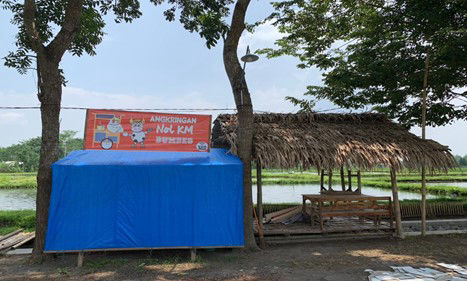
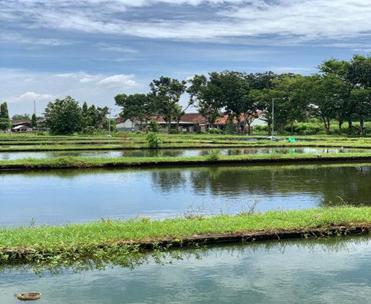

Artikel Terbaru
Tetap up-to-date dengan artikel terkini

May 07, 2021
Pariwisata
Di kawasan desa Bendiljati Wetan sendiri telah berdiri angkringan yang berlokasi di pinggir kolam ikan Bumdes Mina Harapan.

May 08, 2021
Perikanan
Unit usaha perikanan merupakan unit usaha yang paling diandalkan oleh Bumdes Mina Harapan karena hasil perikanan dari Bumdes Mina Harapan dan desa Bendiljati Wetan pada umumnya telah dikenal oleh masyarakat luas karena kualitasnya yang sangat baik.

May 09, 2021
Pertanian
Pertanian yang dikelola oleh Bumdes Mina Harapan meliputi pertanian padi dan pertanian tebu dengan luas wilayah sekitar 2 Hektar.